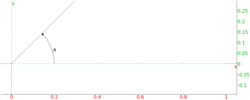
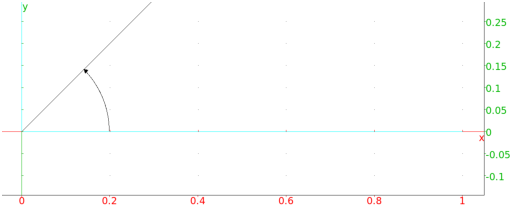
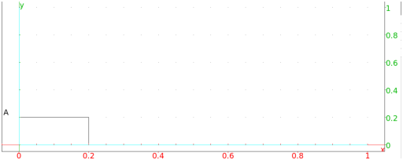

13.14.4 The measure of an angle in the plane: angle
See Section 14.12.9 for angle measures in three-dimensional
geometry.
The angle command finds the measure of an angle.
-
angle takes three mandatory arguments and one
optional argument:
-
A,B,C, three points.
- str, a string.
- angle(A,B,C ⟨str⟩)
returns the measure of angle ABC (in the units that Xcas
is configured for). With the argument str,
the angle will be drawn indicated by a small arc and labeled
with the string. If the angle is a right angle, the indicator will
be a corner rather than an arc.
Examples
-
Input:
angle(0,1,1+i)
Output:
- Input:
angle(0,1,1+i,"a")
Output:

- Input:
angle(0,1,1+i,"")
Output:

- Input:
angle(0,1,i,"A")
Output:

- Input:
angle(0,1,i,"A")[0]
Output:
The angle command has angleat and
angleatraw versions (see Section 13.14.1). For the
command line versions of these commands, the optional fourth argument
for angle is replaced by a mandatory fourth argument for the
point to put the measurement.